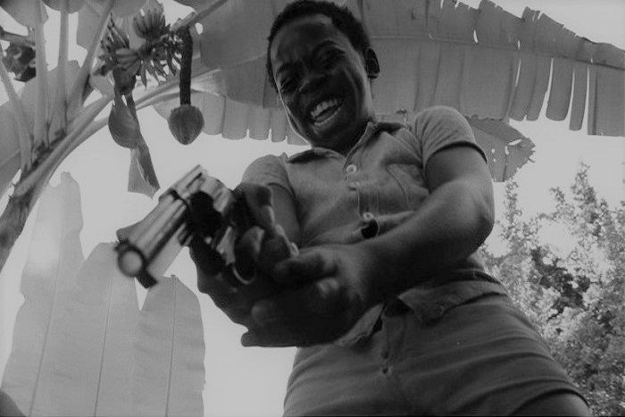

Narcocine: la vida en la frontera
Autor: Grace morales
Fecha de publicacion: 2018-10-30

El culto al fuera de la ley no es un fenómeno reciente, pero Hollywood ha propiciado un género completo dedicado al gánster. La muerte del capo Tony Montana en Scarface es un ejemplo de sublimación de la violencia, de rebeldía, definitivo. La película de Brian de Palma causó una gran impresión en todo el mundo, pero marcaría un antes y un después en el cine mexicano. El narcotráfico ya era tema central en la sociedad y en su música, los corridos, que llevaban décadas contando historias sobre contrabando. El narcocorrido se hizo tan popular como los jefes de los cárteles de la droga, que también eran protagonistas de estas canciones. El cine no tardaría mucho en llevarlas a la pantalla, dando lugar al narcocine, en el que nunca la ficción se ha metamorfoseado tanto con la realidad de un país. La situación límite en que viven muchos territorios ha sido volcada en películas donde se honra la figura del capo como héroe local. No solo eso, sino que más de un capo y más de dos han aparecido en pantalla o en los créditos. Todavía recordamos las noticias sobre el Chapo Guzmán y su deseo de protagonizar su propio biopic tras fugarse de la cárcel.
El traficante de drogas, tal y como cantan los narcocorridos, quería ser retratado como un héroe de leyenda que hacía el bien a los más necesitados, como San Jesús Malverde. A comienzos de los ochenta, la dura política de Reagan contra el narco provocó una reacción positiva de la opinión pública a favor de estas bandas. Fue cuando el «cine de frontera» y los narcocorridos tuvieron años de esplendor y enorme favor del público, tanto en México como en el sur de Estados Unidos. El mercado del narcocine siguió imparable a través del vídeo, ahora el DVD y las distribuidoras que lo llevaban al mercado hispanohablante de Estados Unidos. Se hacían más de cuatrocientas películas al año, y el interés y la simpatía del público por las correrías de los narcos no parecían decaer. En el año 2006, en una decisión propia de sainete, las autoridades mexicanas prohibieron la venta de estas películas, así como de los discos de narcocorridos. Desde entonces solo se pueden comprar en el sur de Estados Unidos y en copias piratas en mercadillos locales. Mientras, en la televisión por cable se ofrecen las películas y series americanas creadas sobre la idea del narco (Breaking Bad, The Cartel, Narcos, The Counselor…).
Existe un enorme mercado de narcocorridos en Colombia, tan fiero como el mexicano. Su cine, sin embargo, va por derroteros muy distintos. Es un cine que ha sorprendido en más de una ocasión por sus propuestas acerca de la miseria y la marginalidad centradas en la figura del sicario. El clásico mercenario es ahora un forajido adolescente cuyos códigos de conducta son una mezcla entre los antihéroes de la cultura pop y los personajes de los narcocorridos, unidos en el más auténtico mensaje nihilista que una generación haya podido entonar. Algunas de las mejores películas del cine del continente se han hecho sobre este particular. Brasil tiene varias, y son de las más crudas y sobresalientes. La proliferación de este cine es una muestra de que la situación, a causa del aumento de las diferencias económicas y de los efectos globales de la comunicación, ha extendido más el problema. Lo hacen visible, ideal para el mercado de consumo, pero completamente invisible para su solución.